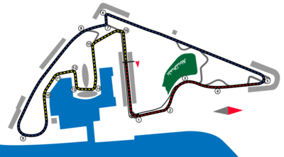

NAVEGUE
Home
Pilotos
Calendário/Tabela
Grand Prix
Construtoras
Últimas Notícias
GP de Abu Dhabi
SOBRE
A pista de Abu Dhabi é um circuito de corrida localizado em Yas Island, nos Emirados Árabes Unidos, que é conhecido por sediar o Grande Prêmio de Abu Dhabi de Fórmula 1 desde 2009. A pista tem um comprimento de 5,554 km e apresenta uma série de curvas de alta velocidade, como a curva 2 e a curva 7, bem como algumas curvas de baixa velocidade, como a curva 8. A pista também possui uma reta longa, que oferece oportunidades de ultrapassagem emocionantes. A pista de Abu Dhabi é famosa por sua arquitetura impressionante, com a pista passando por baixo do icônico hotel Yas Viceroy. A corrida de Abu Dhabi é a última corrida do calendário da Fórmula 1, e muitas vezes é onde o campeonato é decidido.
Circuitos Utilizados
Yas Marina
INFORMAÇÕES DA CORRIDA

Localização
Yas Island, Abu Dhabi
Voltas
58
Percurso
5.281 km
Total
306.183 km
Curvas
16
Pole
Max Verstappen
Anos Disputados
14
Última Disputa
2022
Maior vencedor
Lewis Hamilton
Última Corrida - Pódio
Max Verstappen